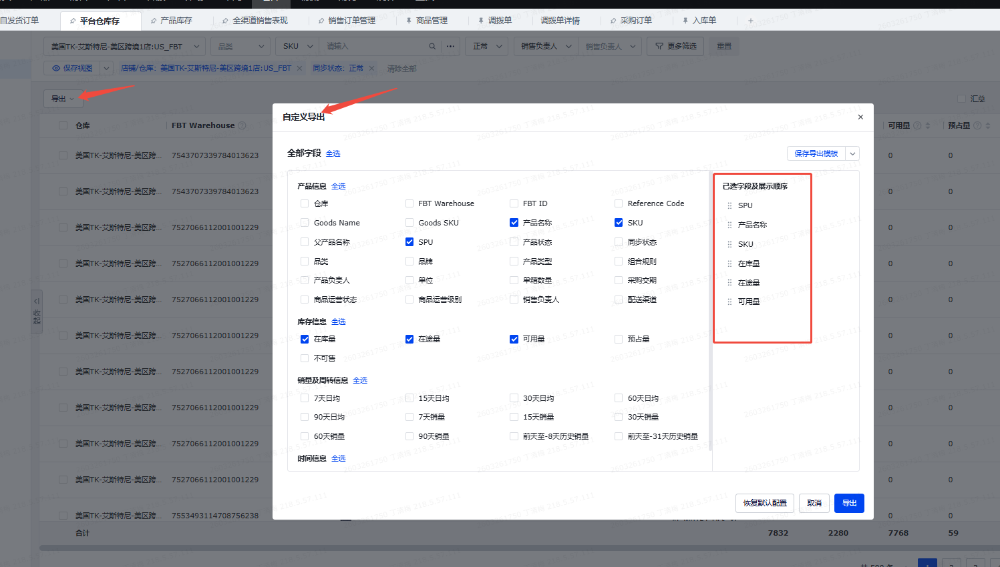
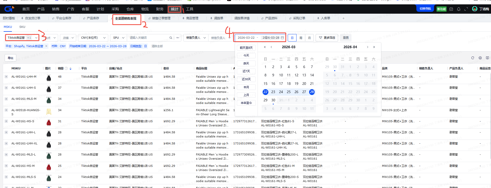
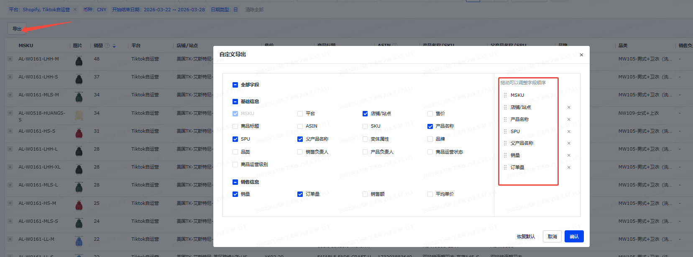

缺补货 — 需求文档
以需求为一级维度；源数据取数方式在文末「源数据统一梳理」统一说明。参照 Excel：发货+补货总和映射表.xlsx（需求 / 映射表 / 源数据路径）。本文档遵循tkDashboard通用需求文档规则，涉及站点与店铺筛选时，默认采用“站点缩小范围、店铺独立可选”的联动口径。
一、需求一：SPU库存冗余检视-SPU
| 优先级 | — |
|---|---|
| 影响面 | SPU 冗余库存识别、库存周转评估、补货节奏判断 |
| 价值 | 按 SPU 粒度统一查看现有库存、加权日销和未来 4 个月库存冗余变化，帮助判断哪些 SPU 存在库存过剩或消化风险。 |
1.1 需求描述
- 输入：
发货+补货总和中间结果表、新建飞书表格维护的 4 个月系数。 - 目标：生成一个以 SPU 为粒度的库存冗余检视看板。
- 核心口径：先汇总同一 SPU 下的加权日销与总可用库存，再结合 4 个未来月份的系数，计算各月预估日均和月底冗余量。
- 场景：用于评估 SPU 层面的库存冗余程度，辅助业务判断清货、控货或后续补货节奏。
1.2 流程
- 先完成 发货+补货总和-SKU 维度底表，得到每个 SKU 的加权日销与总可用库存。
- 按 SPU 汇总同一 SPU 下的加权日销与现有库存，形成 SPU 粒度基础结果。
- 从 新建飞书表格维护 中获取第一个月到第四个月系数。
- 按 “月系数 × 加权日销” 计算四个月的预估日均，并进一步计算各月底冗余量。
- 最终输出 SPU 冗余库存检视看板，展示 SPU 当前库存与未来库存消化趋势。
1.3 单一合并表（SPU库存冗余检视）
- 最终数据表：
SPU库存冗余检视 - 规则：条件/需求公式为空 → 该目标字段为映射；条件/需求公式有值 → 该目标字段为计算。
- 底表建议：以
发货+补货总和作为 SKU 粒度基础结果，再按SPU聚合。 - 补充说明：结合模板文件
发货+补货总和-模板.xlsx的SPU库存冗余检视sheet，可确认该模块的核心逻辑是“先按 SPU 汇总底表中的加权日销与库存，再按固定月份系数推算未来 4 个月预估日均与月底冗余量”。系数字段本身可视为固定值配置项，本文档重点梳理其参与计算的方式。
| 类型 | 目标字段 | 源数据表 | 源字段名称 | 关联字段 | 模板公式 / 需求公式 | 业务逻辑拆解 | 字段用途 / 展示位置 | 备注 / 可落地情况 |
|---|---|---|---|---|---|---|---|---|
| 映射 | 时间 | 系统日期 / ADS分区 | 统计日期 | — | 默认取当前统计日期 / 数据分区日期 | 作为 SPU 看板的统计日期字段使用。 | 看板展示字段 | 建议统一使用看板统计日期口径 |
| 映射 | 站点 | 发货+补货总和 | 站点 | SPU库存冗余检视的“SPU” = 发货+补货总和的“SPU” | 默认取当前 SPU 所属站点 | 按 SPU 聚合时保留站点口径，用于前端筛选与展示。 | 看板筛选字段 | 由需求二底表按 SPU 聚合后直接复用 |
| 映射 | SPU | TIKTOK-在线商品 | SPU | — | — | SPU 粒度主维度字段。 | 看板主键字段 | 基础维度字段，依赖商品主数据 |
| 映射 | SPU名称 | TIKTOK-在线商品 | SPU名称 / 产品名称 | SPU库存冗余检视的“SPU” = 在线商品范围的“SPU” | 按 SPU 映射商品名称 / SPU名称 | 补齐 SPU 展示名称，便于原型直接呈现。 | 看板展示字段 | 若源表缺少 SPU名称，可由商品主数据补充 |
| 汇总 | 加权日销 | 发货+补货总和 | 加权日销 | SPU库存冗余检视的“SPU” = 发货+补货总和的“SPU” | =SUMIF('发货+补货总和'!A:A, 当前SPU, '发货+补货总和'!O:O) | 按 SPU 汇总所有 SKU 的加权日销，得到 SPU 粒度总加权日销。 | 测算基础字段 | 由需求二底表按 SPU 聚合得到 |
| 汇总 | 现有库存 | 发货+补货总和 | 总可用库存 | SPU库存冗余检视的“SPU” = 发货+补货总和的“SPU” | =SUMIF('发货+补货总和'!A:A, 当前SPU, '发货+补货总和'!K:K) + SUMIF('发货+补货总和'!A:A, 当前SPU, '发货+补货总和'!J:J) | 按 SPU 汇总底表库存字段，形成 SPU 粒度库存总量。 | 测算基础字段 | 由需求二底表按 SPU 聚合得到 |
| 映射 | 第一个月系数 | 新建飞书表格维护 | 第一个月系数 | — | — | 固定配置项，用于第一个月销量预测。 | 配置类字段 | 外部维护字段，当前未形成标准数据源 |
| 映射 | 第二个月系数 | 新建飞书表格维护 | 第二个月系数 | — | — | 固定配置项，用于第二个月销量预测。 | 配置类字段 | 外部维护字段，当前未形成标准数据源 |
| 映射 | 第三个月系数 | 新建飞书表格维护 | 第三个月系数 | — | — | 固定配置项，用于第三个月销量预测。 | 配置类字段 | 外部维护字段，当前未形成标准数据源 |
| 映射 | 第四个月系数 | 新建飞书表格维护 | 第四个月系数 | — | — | 固定配置项，用于第四个月销量预测。 | 配置类字段 | 外部维护字段，当前未形成标准数据源 |
| 计算 | 第一个月预估日均 | — | — | 依赖：第一个月系数、加权日销 | =加权日销 × 第一个月系数 | 用 SPU 粒度加权日销乘以第一个月固定系数，得到第一个月预估日均销量。 | 预测结果字段 | 计算字段，直接服务后续冗余测算 |
| 计算 | 第二个月预估日均 | — | — | 依赖：第二个月系数、加权日销 | =加权日销 × 第二个月系数 | 用同一 SPU 的加权日销乘以第二个月固定系数，得到第二个月预估日均销量。 | 预测结果字段 | 计算字段，直接服务后续冗余测算 |
| 计算 | 第三个月预估日均 | — | — | 依赖：第三个月系数、加权日销 | =加权日销 × 第三个月系数 | 用同一 SPU 的加权日销乘以第三个月固定系数，得到第三个月预估日均销量。 | 预测结果字段 | 计算字段，直接服务后续冗余测算 |
| 计算 | 第四个月预估日均 | — | — | 依赖：第四个月系数、加权日销 | =加权日销 × 第四个月系数 | 用同一 SPU 的加权日销乘以第四个月固定系数，得到第四个月预估日均销量。 | 预测结果字段 | 计算字段，直接服务后续冗余测算 |
| 计算 | 第一个月底的冗余量 | — | — | 依赖：现有库存、第一个月预估日均 | =ROUND(现有库存 - 第一个月预估日均 × 7, 0) | 先用现有库存减去第一个月剩余周期内的预估消耗。 | 结果展示字段 | 计算字段，当月剩余天数口径需与业务日期保持一致 |
| 计算 | 第二个月底冗余量 | — | — | 依赖：现有库存、前两月预估日均 | =ROUND(现有库存 - 第一个月预估日均 × 7 - 第二个月预估日均 × 30, 0) | 在第一个月底冗余量基础上，继续扣减第二个月整月预估消耗。 | 结果展示字段 | 计算字段，直接用于冗余结果展示 |
| 计算 | 第三个月底冗余量 | — | — | 依赖：现有库存、前三月预估日均 | =ROUND(现有库存 - 第一个月预估日均 × 7 - 第二个月预估日均 × 30 - 第三个月预估日均 × 31, 0) | 继续扣减第三个月整月预估消耗。 | 结果展示字段 | 计算字段，直接用于冗余结果展示 |
| 计算 | 第四个月底冗余量 | — | — | 依赖：现有库存、前四月预估日均 | =ROUND(现有库存 - 第一个月预估日均 × 7 - 第二个月预估日均 × 30 - 第三个月预估日均 × 31 - 第四个月预估日均 × 30, 0) | 继续扣减第四个月整月预估消耗，结果作为四个月末库存冗余量。 | 结果展示字段 | 计算字段，直接用于冗余结果展示 |
按模板口径可归纳为一条主线：先按 SPU 汇总底表的加权日销和库存，再按固定天数窗口依次扣减未来 4 个阶段的预估消耗。因此该模块的核心不是系数来源本身，而是“SPU 汇总 + 分月消耗递减”的库存推演逻辑。
1.4 最终目标结果
需求一达成的目标：SPU库存冗余检视-SPU 看板，按 SPU 展示现有库存、加权日销、未来 4 个月预估日均和各月底冗余量，用于判断 SPU 是否存在库存冗余或消化压力。
二、需求二：发货+补货总和-SKU
| 优先级 | — |
|---|---|
| 影响面 | SKU 缺货判断、补货测算、发货测算 |
| 价值 | 沉淀 SKU 粒度的缺补货基础底表，同时支撑补货与发货两个动作的测算口径。 |
2.1 需求描述
- 输入：
TIKTOK-在线商品、站点产品库存-自定义导出、TikTok.FBT库存-自定义导出、多平台销售表现、SPU库存冗余检视。 - 目标：生成一个以 SKU 为粒度的发货+补货总和底表。
- 核心口径：围绕 SKU 计算 FBT 库存、三方仓库存、国内库存、总可用库存、当前总库存、过去 7/30 天日销、加权日销，以及后续发货和补货测算所需的中间字段。
- 场景：作为“发货-SKU”“补货-SKU”两个子需求的统一底表。
2.2 流程
- 从 TIKTOK-在线商品 获取 SPU、SKU、SKU 中文名称等商品基础信息。
- 从 TikTok.FBT库存-自定义导出 获取 FBT 可用量、在途量。
- 从 站点产品库存-自定义导出 获取三方仓可用库存、三方仓在途库存、国内可用库存、采购+交货在途库存等库存字段。
- 从 多平台销售表现 中分别按过去 7 天和过去 30 天窗口计算日销，得出加权日销。
- 结合 SPU库存冗余检视 中的月度系数，计算未来 4 个月预估日均和所需总库存。
- 最终输出既能支撑补货逻辑，也能支撑发货逻辑的 SKU 粒度基础结果表。
2.3 单一合并表（发货+补货总和）
- 最终数据表：
发货+补货总和 - 规则：映射表中的
补货/发货列用于标记该字段归属于哪个动作场景；两列均为R的字段可视为公共底表字段；若 Excel 中最终数据表为空，则默认按补货+发货总和处理。 - 底表建议：以
TIKTOK-在线商品为商品范围，按SKU粒度整合库存与销量。 - 相关表：站点产品库存、FBT 库存、多平台销售表现、SPU库存冗余检视。
| 类型 | 目标字段 | 源数据表 | 源字段名称 | 关联字段 | 模板公式 / 需求公式 | 业务逻辑拆解 | 字段用途 / 展示位置 | 备注 / 可落地情况 |
|---|---|---|---|---|---|---|---|---|
| 映射 | 时间 | 系统日期 / ADS分区 | 统计日期 | — | 默认取当前统计日期 / 数据分区日期 | 作为统一底表统计日期字段。 | 原型固定列 | 建议统一使用看板统计日期 |
| 映射 | 站点 | TIKTOK-在线商品 | 站点 | 发货+补货总和的“SKU” = TIKTOK-在线商品的“SKU” | 按 SKU 对应在线商品所属站点映射 | 补齐 SKU 所属站点，用于筛选与展示。 | 原型固定列 | 补货、发货均使用 |
| 映射 | SPU | TIKTOK-在线商品 | SPU | 发货+补货总和的“SKU” = TIKTOK-在线商品的“SKU” | 直接映射商品主数据中的 SPU | 保留商品归属维度。 | 原型固定列 | 公共字段；补货、发货均使用 |
| 映射 | SKU | TIKTOK-在线商品 | SKU | 发货+补货总和的“SKU” = TIKTOK-在线商品的“SKU” | 直接映射商品主数据中的 SKU | 作为统一底表主键字段。 | 原型固定列 | 公共字段；补货、发货均使用 |
| 映射 | SKU中文名称 | TIKTOK-在线商品 | 产品名称 | 发货+补货总和的“SKU” = TIKTOK-在线商品的“SKU” | 直接映射商品名称 | 便于业务识别具体款式和尺码。 | 原型固定列 | 公共字段 |
| 映射 | FBT总库存 | TikTok.FBT库存-自定义导出 | 可用量、在途量 | 发货+补货总和的“SKU” = TikTok.FBT库存-自定义导出的“SKU” | FBT总库存 = FBT库存-可用 + FBT库存-在途 | 汇总 FBT 可用量和在途量，形成平台仓总库存。 | 底表展示字段 | 原型字段名使用 FBT总库存 |
| 映射 | FBT库存-可用 | TikTok.FBT库存-自定义导出 | 可用量 | 发货+补货总和的“SKU” = TikTok.FBT库存-自定义导出的“SKU” | 直接取 FBT 可用量 | 体现当前可直接销售或分配的 FBT 库存。 | 底表展示字段 | 发货视图直接使用 |
| 映射 | 三方仓总库存 | 站点产品库存-自定义导出 | 可用量、在途量 | 发货+补货总和的“SKU” = 站点产品库存-自定义导出的“SKU” | 三方仓总库存 = 三方仓可用库存 + 三方仓在途库存 | 汇总三方仓可用与在途，形成三方仓整体库存。 | 底表展示字段 | 原型字段已展示 |
| 筛选后映射 | 三方仓可用库存 | 站点产品库存-自定义导出 | 可用量 | 发货+补货总和的“SKU” = 站点产品库存-自定义导出的“SKU”，且仓库在三方仓范围内 | 按指定海外仓范围汇总可用量 | 体现三方仓可立即调配库存。 | 底表展示字段 | 发货视图直接使用 |
| 筛选后映射 | 万邑通USKY3可用量 | 站点产品库存-自定义导出 | 可用量 | 发货+补货总和的“SKU” = 站点产品库存-自定义导出的“SKU”，且仓库 = 万邑通:USKY3_Warehouse | 按仓别筛选后汇总可用量 | 定位 USKY3 仓可用库存。 | 仓别可用量明细 | 原型展示字段 |
| 筛选后映射 | 万邑通USWC可用量 | 站点产品库存-自定义导出 | 可用量 | 发货+补货总和的“SKU” = 站点产品库存-自定义导出的“SKU”，且仓库 = 万邑通:USWC_Warehouse | 按仓别筛选后汇总可用量 | 定位 USWC 仓可用库存。 | 仓别可用量明细 | 原型展示字段 |
| 筛选后映射 | 万邑通USW2可用量 | 站点产品库存-自定义导出 | 可用量 | 发货+补货总和的“SKU” = 站点产品库存-自定义导出的“SKU”，且仓库 = 万邑通:USWC2_Warehouse | 按仓别筛选后汇总可用量 | 定位 USW2 仓可用库存。 | 仓别可用量明细 | 原型展示字段 |
| 筛选后映射 | 谷仓可用量 | 站点产品库存-自定义导出 | 可用量 | 发货+补货总和的“SKU” = 站点产品库存-自定义导出的“SKU”，且仓库 = 谷仓相关仓 | 按仓别筛选后汇总可用量 | 定位谷仓可用库存。 | 仓别可用量明细 | 原型展示字段 |
| 筛选后映射 | 三方仓在途库存 | 站点产品库存-自定义导出 | 在途量 | 发货+补货总和的“SKU” = 站点产品库存-自定义导出的“SKU”，且仓库在三方仓范围内 | 按指定海外仓范围汇总在途量 | 体现三方仓整体在途库存。 | 底表展示字段 | 原型字段已展示 |
| 筛选后映射 | 万邑通USKY3在途量 | 站点产品库存-自定义导出 | 在途量 | 发货+补货总和的“SKU” = 站点产品库存-自定义导出的“SKU”，且仓库 = 万邑通:USKY3_Warehouse | 按仓别筛选后汇总在途量 | 定位 USKY3 仓在途数量。 | 仓别在途量明细 | 原型展示字段 |
| 筛选后映射 | 万邑通USWC在途量 | 站点产品库存-自定义导出 | 在途量 | 发货+补货总和的“SKU” = 站点产品库存-自定义导出的“SKU”，且仓库 = 万邑通:USWC_Warehouse | 按仓别筛选后汇总在途量 | 定位 USWC 仓在途数量。 | 仓别在途量明细 | 原型展示字段 |
| 筛选后映射 | 万邑通USW2在途量 | 站点产品库存-自定义导出 | 在途量 | 发货+补货总和的“SKU” = 站点产品库存-自定义导出的“SKU”，且仓库 = 万邑通:USWC2_Warehouse | 按仓别筛选后汇总在途量 | 定位 USW2 仓在途数量。 | 仓别在途量明细 | 原型展示字段 |
| 筛选后映射 | 谷仓在途量 | 站点产品库存-自定义导出 | 在途量 | 发货+补货总和的“SKU” = 站点产品库存-自定义导出的“SKU”，且仓库 = 谷仓相关仓 | 按仓别筛选后汇总在途量 | 定位谷仓在途数量。 | 仓别在途量明细 | 原型展示字段 |
| 计算 | 海外仓可用总库存 | 发货+补货总和 | FBT库存-可用、三方仓可用库存、FBA库存（空着） | 依赖统一底表汇总字段 | FBT库存-可用 + 三方仓可用库存 + FBA库存 | 汇总海外端可立刻使用的库存。 | 测算基础字段 | 状态字段直接引用 |
| 筛选后映射 | 国内可用库存 | 站点产品库存-自定义导出 | 国内可用库存 | 发货+补货总和的“SKU” = 国内库存数据源的“SKU” | 按国内仓范围汇总国内可用库存 | 体现当前国内可立刻出库的库存。 | 测算基础字段 | 补货、发货均使用 |
| 筛选后映射 | 采购+交货在途库存 | 站点产品库存-自定义导出 | 采购在途列、交货在途列 | 发货+补货总和的“SKU” = 国内库存数据源的“SKU” | 采购在途 + 交货在途库存 | 体现采购链路中已在途的国内补货库存。 | 测算基础字段 | 补货视图直接使用 |
| 映射 | FBA库存（空着） | FBA国内库存 | 库存值 | 发货+补货总和的“SKU” = FBA国内库存的“SKU” | 按 SKU 查值，查不到按 0 | 补充海外补货相关库存口径。 | 底表展示字段 | 原型字段命名保留“空着”备注 |
| 计算 | 总可用库存 | 发货+补货总和 | 海外仓可用总库存、国内可用库存 | 依赖统一底表汇总字段 | 海外仓可用总库存 + 国内可用库存 | 汇总国内和海外可用库存后的结果。 | 测算基础字段 | 需求一按 SPU 汇总时直接使用 |
| 计算 | 当前总的库存 | 发货+补货总和 | FBT总库存、三方仓总库存、采购+交货在途库存、国内可用库存、FBA库存（空着） | 依赖统一底表汇总字段 | FBT总库存 + 三方仓总库存 + 采购+交货在途库存 + 国内可用库存 + FBA库存 | 反映当前所有库存口径汇总结果。 | 测算基础字段 | 模板实际使用的总库存口径 |
| 筛选后映射 | 过去7天日销 | 多平台销售表现 | 销量 | 发货+补货总和的“SKU” = 多平台销售表现的“SKU”，且日期取前两天的前 7 天 | 7 天销量汇总 / 7 | 反映短周期销量表现。 | 测算基础字段 | 公共字段 |
| 筛选后映射 | 过去30天日销 | 多平台销售表现 | 销量 | 发货+补货总和的“SKU” = 多平台销售表现的“SKU”，且日期取前两天的前 30 天 | 30 天销量汇总 / 30 | 反映中周期销量表现。 | 测算基础字段 | 公共字段 |
| 计算 | 加权日销 | 发货+补货总和 | 过去7天日销、过去30天日销 | 依赖统一底表销量字段 | 0.7 × 过去7天日销 + 0.3 × 过去30天日销 | 综合 7 天与 30 天销量后的核心预测底值。 | 测算基础字段 | 模板实际使用的 7:3 权重 |
| 计算 | 第一月日均预估 | 发货+补货总和 | 加权日销 | 依赖统一底表销量字段 | 第一月日均预估 = 加权日销 | 模板中第一月直接采用加权日销作为预测值。 | 预测结果字段 | 原型已展示 |
| 计算 | 第二月日均预估 | 发货+补货总和 | 过去7天日销 | 依赖统一底表销量字段 | 过去7天日销 × 1.06 | 用固定系数放大短周期销量，形成第二月预测。 | 预测结果字段 | 模板固定系数 |
| 计算 | 第三月日均预估 | 发货+补货总和 | 过去7天日销 | 依赖统一底表销量字段 | 过去7天日销 × 0.71 | 用固定系数缩放短周期销量，形成第三月预测。 | 预测结果字段 | 模板固定系数 |
| 计算 | 第四月日均预估 | 发货+补货总和 | 过去7天日销 | 依赖统一底表销量字段 | 过去7天日销 × 0.56 | 用固定系数缩放短周期销量，形成第四月预测。 | 预测结果字段 | 模板固定系数 |
| 计算 | 所需的总库存 | 发货+补货总和 | 各月日均预估 | 依赖统一底表预测字段 | 第一月日均预估 × 21 + 第二月日均预估 × 30 + 第三月日均预估 × 31 + 第四月日均预估 × 8 | 按未来 21/30/31/8 天窗口累计库存需求。 | 结果展示字段 | 模板采用 21/30/31/8 天窗口累计需求 |
| 计算 | 状态 | 发货+补货总和 | 海外仓可用总库存、预计要断货天数 | 依赖统一底表汇总字段 | IF(海外仓可用总库存 <= 0, "海外断货", "还可以卖" & 预计要断货天数 & "天") | 按海外仓可用总库存判断是否断货，否则展示剩余可售天数。 | 结果展示字段 | 补货、发货共用状态描述 |
| 计算 | 需要采购的数量 | 发货+补货总和 | 当前总的库存、所需的总库存 | 依赖统一底表汇总字段 | 当前总的库存 - 所需的总库存 | 先用当前总库存减未来窗口需求，小于 0 代表存在采购缺口。 | 结果展示字段 | 补货视图直接使用该列 |
| 计算 | 需要采购的数量-实际 | 发货+补货总和 | 需要采购的数量 | 依赖统一底表结果字段 | IF(需要采购的数量 < 0, -需要采购的数量, 0) | 将负缺口转换成正向采购量。 | 结果展示字段 | 补货视图直接使用该列 |
| 计算 | 预计要断货天数 | 发货+补货总和 | 海外仓可用总库存、加权日销 | 依赖统一底表汇总字段 | IF(加权日销 > 0, ROUND(海外仓可用总库存 / 加权日销, 0), "N/A") | 反映补货和发货共同使用的断货风险天数。 | 结果展示字段 | 补货、发货均使用 |
| 计算 | 需要发货的数量-测算 | 发货+补货总和 | 国内可用库存、所需的总库存、海外仓可用总库存 | 依赖统一底表汇总字段 | IF(国内可用库存 > 0, MIN(国内可用库存, 所需的总库存 - 海外仓可用总库存), 0) | 先算海外缺口，再受国内库存上限约束，得到建议发货量。 | 结果展示字段 | 发货量同时受国内库存与海外缺口约束 |
| 计算 | FBT-实际要发的库存 | 发货+补货总和 | 需要发货的数量-测算、在线还缺的数量、可调拨 | 依赖统一底表结果字段 | MAX(0, MIN(需要发货的数量-测算, IF(在线还缺的数量 < 0, 需要发货的数量-测算, 可调拨))) | 在测算发货量基础上叠加在线缺口和可调拨约束，形成最终实际发货建议量。 | 结果展示字段 | 原型字段名使用“FBT-实际要发的库存” |
| 计算 | FBT海派时间 | 发货+补货总和 | 海派时间规则 | — | 按规则取当前周的下周三 + 32 天 | 形成发货时效窗口的到货日期。 | 辅助信息字段 | 发货时效辅助字段，原型已展示 |
| 计算 | 当天时间 | 系统时间 | 当前日期 | — | TODAY() | 用于与海派时间做时间差计算。 | 辅助信息字段 | 发货时效辅助字段，原型已展示 |
| 计算 | 海派到的时间内需要的库存 | 发货+补货总和 | 各月日均预估、FBT海派时间、当天时间 | 依赖统一底表预测字段 | 按 FBT海派时间与当天时间的间隔，结合各月预估日均累计测算 | 估算海派到货之前这一段时间内的总库存需求。 | 结果展示字段 | 模板采用海派时效窗口需求口径 |
| 计算 | 在线还缺的数量 | 发货+补货总和 | 海派到的时间内需要的库存、海外仓可用总库存 | 依赖统一底表结果字段 | 海派到的时间内需要的库存 - 海外仓可用总库存 | 判断海派到货前在线库存仍有多少缺口。 | 结果展示字段 | 海派到货前的在线库存缺口 |
| 计算 | 可调拨 | 发货+补货总和 | 国内可用库存、在线还缺的数量 | 依赖统一底表结果字段 | 国内可用库存 - 在线还缺的数量 | 测算在满足当前在线缺口后还能调拨的国内余量。 | 结果展示字段 | 可用于调拨或发货的国内余量 |
当前 Excel 的打钩列可以明确区分“补货字段”“发货字段”和“公共字段”，但个别字段的正式关联键和时间口径仍较粗。例如：
SPU库存冗余检视 月系数如何准确关联到 SKU、FBT总库存 / FBT库存-可用 与三方仓总量/可用量的取数口径是否完全一致，都建议在开发前再做一次口径确认。另一个关键风险点是：TikTok.FBT库存-自定义导出 属于店铺维度数据源，而 发货+补货总和 当前按 SKU + 站点 汇总；若美国站点下存在 3 个店铺，则 FBT 库存可能被合并统计，需确认业务是否接受按站点合并，还是必须保留店铺维度区分。
按模板公式可归纳出需求二的主线：先按 SKU 汇总各来源库存与销量，形成库存现状；再用未来固定时间窗口推算所需库存；最后分别产出补货缺口、发货建议量、海派前缺口与实际可发量。这也是后续发货视图和补货视图的统一底层计算逻辑。
2.4 最终目标结果
需求二达成的目标：发货+补货总和-SKU 看板 / 底表，按 SKU 展示库存结构、销量结构与未来库存测算结果，作为后续发货与补货决策的统一基础。
三、需求三：发货-SKU
| 优先级 | — |
|---|---|
| 影响面 | FBT 发货测算、在线缺货判断、仓间调拨决策 |
| 价值 | 聚焦“发货”动作，输出实际需要发货的数量-测算、海派时间窗口内的缺口，以及可调拨空间。 |
3.1 需求描述
- 输入：
发货+补货总和底表。 - 目标：基于映射表中的“发货”打钩字段，生成 SKU 粒度发货看板。
- 核心口径：围绕在线缺口、FBT 实际发货库存、海派到货时间内库存缺口、可调拨量做测算。
- 场景：用于决定哪些 SKU 当前需要发货、可发多少、何时会出现在线缺货。
3.2 流程
- 复用需求二中已经生成的 SKU 基础库存与销量结果。
- 根据总可用库存、所需总库存和加权日销，计算在线还缺的数量与预计断货天数。
- 根据发货测算逻辑，计算需要发货的数量-测算、FBT实际发货量。
- 结合海派时间，计算海派到货时间内需要的库存与可调拨量。
- 最终输出发货-SKU 看板，用于发货优先级与数量判断。
3.3 单一合并表（发货-SKU 看板）
| 类型 | 目标字段 | 源数据表 | 源字段名称 | 关联字段 | 模板公式 / 需求公式 | 业务逻辑拆解 | 字段用途 / 展示位置 | 备注 / 可落地情况 |
|---|---|---|---|---|---|---|---|---|
| 复用 | 时间 | 发货+补货总和 | 时间 | 发货-SKU 的“SKU” = 需求二底表的“SKU” | 直接复用需求二底表时间字段 | 记录当前发货看板使用的数据日期。 | 原型固定列 | 展示顺序在最前 |
| 复用 | 站点 | 发货+补货总和 | 站点 | 发货-SKU 的“SKU” = 需求二底表的“SKU” | 直接复用需求二底表站点字段 | 用于筛选站点和列表展示。 | 原型固定列 | 展示顺序在最前 |
| 复用 | SPU | 发货+补货总和 | SPU | 发货-SKU 的“SKU” = 需求二底表的“SKU” | 直接复用需求二底表 SPU | 保留发货分析的商品归属维度。 | 原型固定列 | 发货场景基础维度字段 |
| 复用 | SKU | 发货+补货总和 | SKU | 发货-SKU 的“SKU” = 需求二底表的“SKU” | 直接复用需求二底表 SKU | 发货列表的主键字段。 | 原型固定列 | 发货场景基础维度字段 |
| 复用 | SKU中文名称 | 发货+补货总和 | SKU中文名称 | 发货-SKU 的“SKU” = 需求二底表的“SKU” | 直接复用需求二底表 SKU中文名称 | 便于业务识别具体款式和尺码。 | 原型固定列 | 发货场景基础维度字段 |
| 复用 | FBT总库存 | 发货+补货总和 | FBT总库存 | 发货-SKU 的“SKU” = 需求二底表的“SKU” | 直接复用需求二底表 FBT总库存 | 展示当前平台仓总库存规模。 | 发货列表字段 | 原型已展示 |
| 复用 | FBT库存-可用 | 发货+补货总和 | FBT库存-可用 | 发货-SKU 的“SKU” = 需求二底表的“SKU” | 直接复用需求二底表 FBT库存-可用 | 体现当前可直接销售或分配的 FBT 库存。 | 发货列表字段 | 发货场景基础字段 |
| 复用 | 三方仓总库存 | 发货+补货总和 | 三方仓总库存 | 发货-SKU 的“SKU” = 需求二底表的“SKU” | 直接复用需求二底表 三方仓总库存 | 展示三方仓整体库存规模。 | 发货列表字段 | 原型已展示 |
| 复用 | 三方仓可用库存 | 发货+补货总和 | 三方仓可用库存 | 发货-SKU 的“SKU” = 需求二底表的“SKU” | 直接复用需求二底表 三方仓可用库存 | 体现三方仓可立即调配库存。 | 发货列表字段 | 发货场景基础字段 |
| 复用 | 万邑通USKY3可用量 | 发货+补货总和 | 万邑通USKY3可用量 | 发货-SKU 的“SKU” = 需求二底表的“SKU” | 直接复用需求二底表仓别可用量字段 | 定位 USKY3 仓可用库存。 | 仓别可用量明细 | 原型已展示 |
| 复用 | 万邑通USWC可用量 | 发货+补货总和 | 万邑通USWC可用量 | 发货-SKU 的“SKU” = 需求二底表的“SKU” | 直接复用需求二底表仓别可用量字段 | 定位 USWC 仓可用库存。 | 仓别可用量明细 | 原型已展示 |
| 复用 | 万邑通USW2可用量 | 发货+补货总和 | 万邑通USW2可用量 | 发货-SKU 的“SKU” = 需求二底表的“SKU” | 直接复用需求二底表仓别可用量字段 | 定位 USW2 仓可用库存。 | 仓别可用量明细 | 原型已展示 |
| 复用 | 谷仓可用量 | 发货+补货总和 | 谷仓可用量 | 发货-SKU 的“SKU” = 需求二底表的“SKU” | 直接复用需求二底表仓别可用量字段 | 定位谷仓可用库存。 | 仓别可用量明细 | 原型已展示 |
| 复用 | 三方仓在途库存 | 发货+补货总和 | 三方仓在途库存 | 发货-SKU 的“SKU” = 需求二底表的“SKU” | 直接复用需求二底表 三方仓在途库存 | 展示三方仓整体在途库存。 | 发货列表字段 | 发货场景基础字段 |
| 复用 | 万邑通USKY3在途量 | 发货+补货总和 | 万邑通USKY3在途量 | 发货-SKU 的“SKU” = 需求二底表的“SKU” | 直接复用需求二底表仓别在途量字段 | 定位 USKY3 仓在途数量。 | 仓别在途量明细 | 原型已展示 |
| 复用 | 万邑通USWC在途量 | 发货+补货总和 | 万邑通USWC在途量 | 发货-SKU 的“SKU” = 需求二底表的“SKU” | 直接复用需求二底表仓别在途量字段 | 定位 USWC 仓在途数量。 | 仓别在途量明细 | 原型已展示 |
| 复用 | 万邑通USW2在途量 | 发货+补货总和 | 万邑通USW2在途量 | 发货-SKU 的“SKU” = 需求二底表的“SKU” | 直接复用需求二底表仓别在途量字段 | 定位 USW2 仓在途数量。 | 仓别在途量明细 | 原型已展示 |
| 复用 | 谷仓在途量 | 发货+补货总和 | 谷仓在途量 | 发货-SKU 的“SKU” = 需求二底表的“SKU” | 直接复用需求二底表仓别在途量字段 | 定位谷仓在途数量。 | 仓别在途量明细 | 原型已展示 |
| 复用 | 海外仓可用总库存 | 发货+补货总和 | 海外仓可用总库存 | 发货-SKU 的“SKU” = 需求二底表的“SKU” | 直接复用需求二底表 海外仓可用总库存 | 作为状态判断和发货缺口计算基础。 | 发货测算基础值 | 状态判断字段 |
| 复用 | 国内可用库存 | 发货+补货总和 | 国内可用库存 | 发货-SKU 的“SKU” = 需求二底表的“SKU” | 直接复用需求二底表 国内可用库存 | 作为发货量上限和可调拨判断依据。 | 发货测算基础值 | 发货量受该字段约束 |
| 复用 | 总可用库存 | 发货+补货总和 | 总可用库存 | 发货-SKU 的“SKU” = 需求二底表的“SKU” | 直接复用需求二底表 总可用库存 | 汇总国内和海外可用库存后的结果。 | 发货测算基础值 | 发货场景基础字段 |
| 复用 | 当前总的库存 | 发货+补货总和 | 当前总的库存 | 发货-SKU 的“SKU” = 需求二底表的“SKU” | 直接复用需求二底表 当前总的库存 | 反映当前所有库存口径汇总结果。 | 发货测算基础值 | 发货场景基础字段 |
| 复用 | 过去7天日销 | 发货+补货总和 | 过去7天日销 | 发货-SKU 的“SKU” = 需求二底表的“SKU” | 直接复用需求二底表销量字段 | 反映短周期销量表现。 | 发货预测基础值 | 原型已展示 |
| 复用 | 过去30天日销 | 发货+补货总和 | 过去30天日销 | 发货-SKU 的“SKU” = 需求二底表的“SKU” | 直接复用需求二底表销量字段 | 反映中周期销量表现。 | 发货预测基础值 | 原型已展示 |
| 复用 | 加权日销 | 发货+补货总和 | 加权日销 | 发货-SKU 的“SKU” = 需求二底表的“SKU” | 直接复用需求二底表 加权日销 | 综合 7 天与 30 天销量后的核心预测底值。 | 发货预测基础值 | 发货场景基础字段 |
| 复用 | 第一月日均预估 | 发货+补货总和 | 第一月日均预估 | 发货-SKU 的“SKU” = 需求二底表的“SKU” | 直接复用需求二底表未来预测字段 | 作为未来时间窗口需求测算的月度输入。 | 发货预测基础值 | 海派到货前库存需求依赖这些字段 |
| 复用 | 第二月日均预估 | 发货+补货总和 | 第二月日均预估 | 发货-SKU 的“SKU” = 需求二底表的“SKU” | 直接复用需求二底表未来预测字段 | 作为未来时间窗口需求测算的月度输入。 | 发货预测基础值 | 海派到货前库存需求依赖这些字段 |
| 复用 | 第三月日均预估 | 发货+补货总和 | 第三月日均预估 | 发货-SKU 的“SKU” = 需求二底表的“SKU” | 直接复用需求二底表未来预测字段 | 作为未来时间窗口需求测算的月度输入。 | 发货预测基础值 | 海派到货前库存需求依赖这些字段 |
| 复用 | 第四月日均预估 | 发货+补货总和 | 第四月日均预估 | 发货-SKU 的“SKU” = 需求二底表的“SKU” | 直接复用需求二底表未来预测字段 | 作为未来时间窗口需求测算的月度输入。 | 发货预测基础值 | 海派到货前库存需求依赖这些字段 |
| 复用 | 所需的总库存 | 发货+补货总和 | 所需的总库存 | 发货-SKU 的“SKU” = 需求二底表的“SKU” | 直接复用需求二底表所需总库存字段 | 用于发货缺口和备货需求判断。 | 发货预测基础值 | 发货缺口计算字段 |
| 计算 | 状态 | 发货+补货总和 | 海外仓可用总库存、预计要断货天数 | 依赖需求二统一底表 | IF(海外仓可用总库存 <= 0, "海外断货", "还可以卖" & 预计要断货天数 & "天") | 按海外仓可用总库存判断是否断货，否则展示剩余可售天数。 | 状态展示字段 | 与原型一致 |
| 复用 | 预计要断货天数 | 发货+补货总和 | 预计要断货天数 | 发货-SKU 的“SKU” = 需求二底表的“SKU” | 直接复用需求二底表预计要断货天数 | 给状态描述和优先级排序提供依据。 | 状态辅助字段 | 状态展示直接引用 |
| 计算 | 需要发货的数量-测算 | 发货+补货总和 | 国内可用库存、所需总库存、海外仓可用总库存 | 依赖需求二统一底表 | IF(国内可用库存 > 0, MIN(国内可用库存, 所需总库存 - 海外仓可用总库存), 0) | 先算海外缺口，再受国内库存上限约束，得到建议发货量。 | 发货核心结果字段 | 发货测算核心字段 |
| 计算 | FBT-实际要发的库存 | 发货+补货总和 | 需要发货的数量-测算、在线还缺的数量、可调拨 | 依赖需求二统一底表 | MAX(0, MIN(需要发货的数量-测算, IF(在线还缺的数量 < 0, 需要发货的数量-测算, 可调拨))) | 在测算发货量基础上，再叠加在线缺口与可调拨约束，形成最终实际发货建议量。 | 发货最终结果字段 | 原型字段名使用“FBT-实际要发的库存” |
| 计算 | FBT海派时间 | 发货+补货总和 | 海派时间规则 | — | 当前周的下周三 + 32 天 | 形成发货时效窗口的到货日期。 | 发货时效辅助字段 | 原型已展示 |
| 计算 | 海派到的时间内需要的库存 | 发货+补货总和 | 各月预估日均、海派时间窗口 | 依赖需求二统一底表 | 按 FBT海派时间到当天的间隔，结合各月预估日均累计测算 | 估算海派到货之前这一段时间内的总库存需求。 | 发货时效缺口字段 | 发货时效缺口判断 |
| 计算 | 在线还缺的数量 | 发货+补货总和 | 海派到的时间内需要的库存、海外仓可用总库存 | 依赖需求二统一底表 | 海派到的时间内需要的库存 - 海外仓可用总库存 | 判断海派到货前在线库存仍有多少缺口。 | 发货时效缺口字段 | 发货场景核心字段 |
| 计算 | 可调拨 | 发货+补货总和 | 国内可用库存、在线还缺的数量 | 依赖需求二统一底表 | 国内可用库存 - 在线还缺的数量 | 测算在满足当前在线缺口后还能调拨的国内余量。 | 发货时效缺口字段 | 调拨参考字段 |
3.4 最终目标结果
需求三达成的目标：发货-SKU 看板，按 SKU 展示当前是否需要发货、实际建议发货数量、海派到货前的库存缺口，以及可调拨空间，用于发货决策。
四、需求四：补货-SKU
| 优先级 | — |
|---|---|
| 影响面 | 补货测算、采购计划、库存安全策略 |
| 价值 | 聚焦“补货”动作，测算 SKU 是否需要补货、应补多少，并用断货天数衡量紧急程度。 |
4.1 需求描述
- 输入：
发货+补货总和底表。 - 目标：基于映射表中的“补货”打钩字段，生成 SKU 粒度补货看板。
- 核心口径：围绕所需总库存、当前总库存、采购+交货在途库存、需要采购的数量、需要采购的数量-实际与预计断货天数做测算。
- 场景：用于采购补货判断，识别哪些 SKU 已经不足、还差多少、是否需要立即下采购动作。
4.2 流程
- 复用需求二中已经生成的 SKU 基础库存与销量结果。
- 根据加权日销与未来 90 天预估消耗，计算所需总库存。
- 结合当前总库存与采购+交货在途库存，计算需要采购的数量。
- 对需要采购的数量做实际口径修正，得到需要采购的数量-实际。
- 结合预计断货天数，形成补货优先级输出。
4.3 单一合并表（补货-SKU 看板）
| 类型 | 目标字段 | 源数据表 | 源字段名称 | 关联字段 | 模板公式 / 需求公式 | 业务逻辑拆解 | 字段用途 / 展示位置 | 备注 / 可落地情况 |
|---|---|---|---|---|---|---|---|---|
| 复用 | 时间 | 发货+补货总和 | 时间 | 补货-SKU 的“SKU” = 需求二底表的“SKU” | 直接复用需求二底表时间字段 | 记录当前补货看板使用的数据日期。 | 原型固定列 | 展示顺序在最前 |
| 复用 | 站点 | 发货+补货总和 | 站点 | 补货-SKU 的“SKU” = 需求二底表的“SKU” | 直接复用需求二底表站点字段 | 用于筛选站点和列表展示。 | 原型固定列 | 展示顺序在最前 |
| 复用 | SPU | 发货+补货总和 | SPU | 补货-SKU 的“SKU” = 需求二底表的“SKU” | 直接复用需求二底表 SPU | 保留补货分析的商品归属维度。 | 原型固定列 | 补货场景基础维度字段 |
| 复用 | SKU | 发货+补货总和 | SKU | 补货-SKU 的“SKU” = 需求二底表的“SKU” | 直接复用需求二底表 SKU | 补货列表的主键字段。 | 原型固定列 | 补货场景基础维度字段 |
| 复用 | SKU中文名称 | 发货+补货总和 | SKU中文名称 | 补货-SKU 的“SKU” = 需求二底表的“SKU” | 直接复用需求二底表 SKU中文名称 | 便于业务识别具体款式和尺码。 | 原型固定列 | 补货场景基础维度字段 |
| 复用 | FBT总库存 | 发货+补货总和 | FBT总库存 | 补货-SKU 的“SKU” = 需求二底表的“SKU” | 直接复用需求二底表 FBT总库存 | 展示当前平台仓总库存规模。 | 补货列表字段 | 原型已展示 |
| 复用 | 三方仓总库存 | 发货+补货总和 | 三方仓总库存 | 补货-SKU 的“SKU” = 需求二底表的“SKU” | 直接复用需求二底表 三方仓总库存 | 展示三方仓整体库存规模。 | 补货列表字段 | 原型已展示 |
| 复用 | 海外仓可用总库存 | 发货+补货总和 | 海外仓可用总库存 | 补货-SKU 的“SKU” = 需求二底表的“SKU” | 直接复用需求二底表 海外仓可用总库存 | 作为补货紧急程度和断货风险判断依据。 | 补货测算基础值 | 补货场景基础字段 |
| 复用 | 采购+交货在途库存 | 发货+补货总和 | 采购+交货在途库存 | 补货-SKU 的“SKU” = 需求二底表的“SKU” | 直接复用需求二底表采购+交货在途库存 | 体现国内采购链路中已经在补货路上的库存。 | 补货重点字段 | 补货场景重点字段 |
| 复用 | FBA库存（空着） | 发货+补货总和 | FBA库存 | 补货-SKU 的“SKU” = 需求二底表的“SKU” | 直接复用需求二底表 FBA库存 | 补充海外补货相关库存口径。 | 补货列表字段 | 原型字段命名保留“空着”备注 |
| 复用 | 国内可用库存 | 发货+补货总和 | 国内可用库存 | 补货-SKU 的“SKU” = 需求二底表的“SKU” | 直接复用需求二底表 国内可用库存 | 体现当前国内可立刻出库的库存。 | 补货测算基础值 | 补货场景基础字段 |
| 复用 | 总可用库存 | 发货+补货总和 | 总可用库存 | 补货-SKU 的“SKU” = 需求二底表的“SKU” | 直接复用需求二底表 总可用库存 | 汇总国内和海外可用库存后的结果。 | 补货测算基础值 | 补货场景基础字段 |
| 复用 | 当前总的库存 | 发货+补货总和 | 当前总的库存 | 补货-SKU 的“SKU” = 需求二底表的“SKU” | 直接复用需求二底表 当前总的库存 | 反映当前所有库存口径汇总结果。 | 补货测算基础值 | 补货场景核心判断字段 |
| 复用 | 过去7天日销 | 发货+补货总和 | 过去7天日销 | 补货-SKU 的“SKU” = 需求二底表的“SKU” | 直接复用需求二底表销量字段 | 反映短周期销量表现。 | 补货预测基础值 | 原型已展示 |
| 复用 | 过去30天日销 | 发货+补货总和 | 过去30天日销 | 补货-SKU 的“SKU” = 需求二底表的“SKU” | 直接复用需求二底表销量字段 | 反映中周期销量表现。 | 补货预测基础值 | 原型已展示 |
| 复用 | 加权日销 | 发货+补货总和 | 加权日销 | 补货-SKU 的“SKU” = 需求二底表的“SKU” | 直接复用需求二底表 加权日销 | 综合 7 天与 30 天销量后的核心预测底值。 | 补货预测基础值 | 补货场景基础字段 |
| 复用 | 第一月日均预估 | 发货+补货总和 | 第一月日均预估 | 补货-SKU 的“SKU” = 需求二底表的“SKU” | 直接复用需求二底表未来预测字段 | 作为未来窗口库存需求测算的月度输入。 | 补货预测基础值 | 原型已展示 |
| 复用 | 第二月日均预估 | 发货+补货总和 | 第二月日均预估 | 补货-SKU 的“SKU” = 需求二底表的“SKU” | 直接复用需求二底表未来预测字段 | 作为未来窗口库存需求测算的月度输入。 | 补货预测基础值 | 原型已展示 |
| 复用 | 第三月日均预估 | 发货+补货总和 | 第三月日均预估 | 补货-SKU 的“SKU” = 需求二底表的“SKU” | 直接复用需求二底表未来预测字段 | 作为未来窗口库存需求测算的月度输入。 | 补货预测基础值 | 原型已展示 |
| 复用 | 第四月日均预估 | 发货+补货总和 | 第四月日均预估 | 补货-SKU 的“SKU” = 需求二底表的“SKU” | 直接复用需求二底表未来预测字段 | 作为未来窗口库存需求测算的月度输入。 | 补货预测基础值 | 原型已展示 |
| 复用 | 所需的总库存 | 发货+补货总和 | 所需的总库存 | 补货-SKU 的“SKU” = 需求二底表的“SKU” | 直接复用需求二底表所需总库存字段 | 用于判断未来窗口内库存是否足够。 | 补货核心结果前置字段 | 补货场景核心字段 |
| 计算 | 需要采购的数量 | 发货+补货总和 | 当前总的库存、所需的总库存 | 依赖需求二统一底表 | 当前总的库存 - 所需的总库存 | 先用当前总库存减未来窗口需求，小于 0 代表存在采购缺口。 | 补货缺口字段 | Excel 口径说明：小于 0 时要采购 |
| 计算 | 需要采购的数量-实际 | 发货+补货总和 | 需要采购的数量 | 依赖需求二统一底表 | MAX(-需要采购的数量, 0) | 将负缺口转成正向采购量，方便业务直接使用。 | 补货最终结果字段 | 补货场景核心结果字段 |
| 复用 | 预计要断货天数 | 发货+补货总和 | 预计要断货天数 | 补货-SKU 的“SKU” = 需求二底表的“SKU” | 直接复用需求二底表预计要断货天数 | 反映补货紧急程度和断货风险。 | 补货优先级字段 | 原型已展示 |
4.4 最终目标结果
需求四达成的目标：补货-SKU 看板，按 SKU 输出补货缺口、实际建议补货数量与预计断货天数，用于采购与备货决策。
五、源数据统一梳理
以下为当前缺补货需求涉及的源数据，统一说明取数方式、用途，以及是否已经在 源数据集成列表 中登记。
当前对照文件：
本模块涉及的源数据名称与库存检查模块高度相似，但现有总清单中未直接检索到完全同名项，因此本版先统一按“当前未在源数据集成列表中登记”记录；若后续确认可复用已有 ODS 表，再补充正式表名。
bi/tkDashboard/技术方案/源数据统一梳理-ODS.html。本模块涉及的源数据名称与库存检查模块高度相似，但现有总清单中未直接检索到完全同名项，因此本版先统一按“当前未在源数据集成列表中登记”记录；若后续确认可复用已有 ODS 表，再补充正式表名。
5.1 TIKTOK-在线商品
| 项目 | 说明 | 集成说明 |
|---|---|---|
| 来源 | 积加后台 | 当前未在源数据集成列表中登记 |
| 步骤 1 | 积加 → 销售 → 商品管理 → Tiktok自运营 → 筛选店铺 → 筛选在售 | 与库存检查模块口径一致，可优先评估是否复用同一商品维度链路 |
| 步骤 2 | 导出 → 导出查询结果 | 当前 Excel 以导出方式描述 |
| 用途 | 提供 SPU、SKU、SKU 中文名称等基础商品字段 | 缺补货基础商品维度 |

截图 1：TIKTOK-在线商品，步骤 1，进入积加后台销售 → 商品管理 → Tiktok自运营，并按店铺、在售状态筛选。

截图 2：TIKTOK-在线商品，步骤 2，导出查询结果。
5.2 站点产品库存-自定义导出
| 项目 | 说明 | 集成说明 |
|---|---|---|
| 来源 | 积加后台 | 当前未在源数据集成列表中登记 |
| 步骤 1 | 积加 → 仓库 → 产品库存 → 站点产品库存 → 筛选仓库 → 筛选共享 | 当前 Excel 明确了美区、英区仓库范围 |
| 步骤 2 | 导出 → 自定义导出 | 当前 Excel 以导出方式描述 |
| 用途 | 提供三方仓可用库存、三方仓在途库存、国内可用库存、采购+交货在途库存等字段 | 缺补货最核心库存来源 |

截图 3：站点产品库存-自定义导出，步骤 1，进入积加后台仓库 → 产品库存 → 站点产品库存，并按仓库、共享状态筛选。

截图 4：站点产品库存-自定义导出，步骤 2，自定义导出操作截图。
5.3 TikTok.FBT库存-自定义导出
| 项目 | 说明 | 集成说明 |
|---|---|---|
| 来源 | 积加后台 | 当前未在源数据集成列表中登记 |
| 步骤 1 | 积加 → 仓库 → 平台仓库存 → TikTok自运营 → 筛选仓库为美国TK-艾斯特尼-美区跨境1店:US_FBT → 筛选同步状态为正常 | 当前 Excel 以导出方式描述 |
| 步骤 2 | 导出 → 自定义导出 | 当前 Excel 以导出方式描述 |
| 用途 | 提供 FBT 可用量、FBT 在途量 | 支撑发货/补货的 FBT 库存口径 |

截图 5：TikTok.FBT库存-自定义导出，步骤 1，进入平台仓库存 → TikTok自运营，并按 US_FBT 仓库、同步状态筛选。

截图 6：TikTok.FBT库存-自定义导出，步骤 2，自定义导出操作截图。
风险点 / 待确认口径：
TikTok.FBT库存-自定义导出 是按店铺仓库拉取的数据源，天然属于店铺维度；但 发货+补货总和 当前按 SKU + 站点 汇总。如果美国站点下存在 3 个店铺，则这些店铺的 FBT 库存有可能被合并统计。开发前需确认业务是否接受按站点合并，还是必须保留店铺维度单独核算。
5.4 积加-商品管理-可用库存
| 项目 | 说明 | 集成说明 |
|---|---|---|
| 来源 | 积加后台 | 当前未在源数据集成列表中登记 |
| 路径 | 积加 → 仓库 → 产品库存 → 站点产品库存 → 筛选仓库 → 筛选共享 → 库存数量 | 当前 Excel 仅描述获取路径 |
| 用途 | 当前映射表中未直接落成字段，但与库存检查模块共享同一业务背景，可作为后续扩展的同步库存口径来源 | 建议作为候选源数据保留 |

截图 7：积加-商品管理-可用库存，对应库存数量页面的获取路径截图。
5.5 多平台销售表现
| 项目 | 说明 | 集成说明 |
|---|---|---|
| 来源 | 积加后台 | 当前未在源数据集成列表中登记 |
| 步骤 1 | 积加 → 全渠道销售表现 → 筛选平台 → 筛选日期；平台为 Shopify、Tiktok自运营；日期按“前两天的前 7 天 / 前 30 天”窗口取数 | 当前映射表明确写了 7 天、30 天两个销量窗口口径 |
| 步骤 2 | 导出 → 自定义导出 | 当前 Excel 以导出方式描述 |
| 用途 | 提供销量，用于计算过去 7 天日销、过去 30 天日销和加权日销 | 缺补货销量测算核心来源 |

截图 8：多平台销售表现，步骤 1，进入全渠道销售表现并按平台、日期筛选。

截图 9：多平台销售表现，步骤 2，自定义导出操作截图。
5.6 每月系数文件
| 项目 | 说明 | 集成说明 |
|---|---|---|
| 来源 | 飞书 | 初步定义来源于飞书，当前按外部维护文件口径记录 |
| 文件内容 | 按月维护第一个月系数、第二个月系数、第三个月系数、第四个月系数 | 当前与 新建飞书表格维护 口径一致 |
| 用途 | 用于 SPU库存冗余检视中未来 4 个月冗余量测算 | 属于系数型外部维护数据，后续可再明确是否沉淀为标准数据源 |
六、需求与数据对照小结
| 需求 | 核心动作 | 使用的源数据 | 产出 |
|---|---|---|---|
| 需求一 | 按 SPU 汇总加权日销、现有库存，并计算未来 4 个月冗余量 | 发货+补货总和 + 新建飞书表格维护 | SPU库存冗余检视-SPU 看板 |
| 需求二 | 按 SKU 汇总库存、销量与未来库存测算，形成发货/补货统一底表 | TIKTOK-在线商品 + 站点产品库存-自定义导出 + TikTok.FBT库存-自定义导出 + 多平台销售表现 + SPU库存冗余检视 | 发货+补货总和-SKU 看板 / 底表 |
| 需求三 | 基于统一底表，测算实际发货数量、在线缺口与可调拨量 | 发货+补货总和 | 发货-SKU 看板 |
| 需求四 | 基于统一底表，测算实际补货数量与断货风险 | 发货+补货总和 | 补货-SKU 看板 |